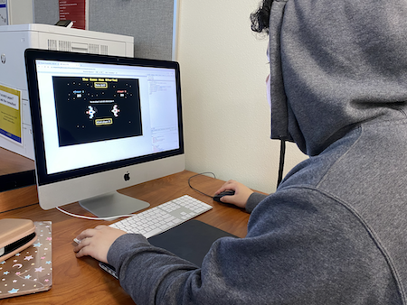
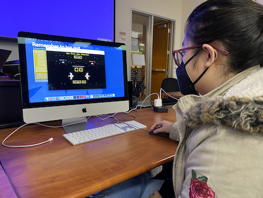
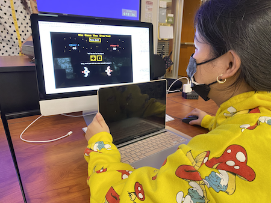

Was able to find instructions pretty easily. Clicked ESC to go back to main menu. Seemed a bit confused with regards to who the player is and the scores. Hit zero, yet the game did not end.
"Definitely the indicators of who is taking damage and using color. I think when it wins, say health instead of points. Maybe be able to access the instructions from any part of the game."
Tested out the esc function of being able to return to the main menu. Clicked on pass to make sure it worked. Passed several times to see if there was a correct swap between players. Seems that the hover title changing colors is a bit distracting. Snake eyes message went to fast, physically reacted looking surprised.
"Reminds me of the space games, the mobile ones where you go up and shoot a big boss monster. Definitely feels retro due to the pixel look to it. At the end, shows the ship destroyed. Player 1 is destroyed."
Opened the instructions. Started the game. Took some time on the story page. Consistently decided to roll the die rather than pass or mix between. Went back to read the instructions.
"It would be fun if you shot player and some sort of laser appeared."